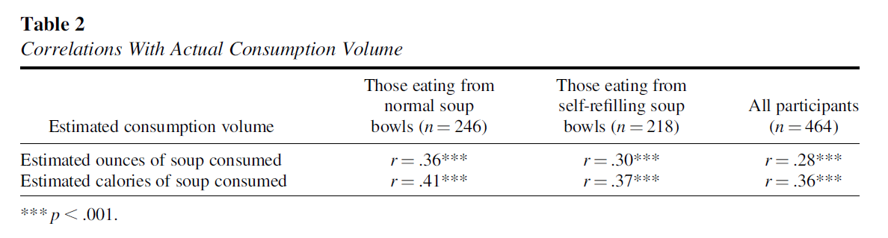
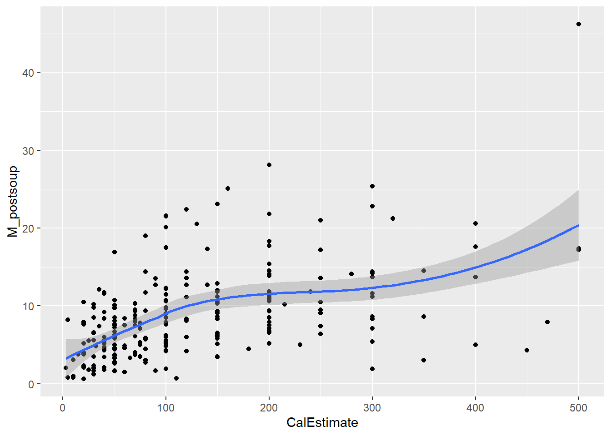

9 Correlations
Intended Learning Outcomes
By the end of this chapter you should be able to:
- Compute a Pearson correlation and effectively report the results.
- Understand when to use a non-parametric equivalent of correlation, compute it, and report the results.
Individual Walkthrough
9.1 Activity 1: Setup & download the data
This week, we will be working with a new dataset. Follow the steps below to set up your project:
- Create a new project and name it something meaningful (e.g., “2A_chapter9”, or “09_correlation”). See Section 1.2 if you need some guidance.
-
Create a new
.Rmdfile and save it to your project folder. See Section 1.3 if you need help. - Delete everything after the setup code chunk (e.g., line 12 and below)
-
Download the new dataset here: data_ch9.zip. The zip folder includes the following files:
-
Soupbowl_data_dictionary.xlsx: A codebook with detailed variable descriptions -
data_ch9_correlation.csv: A CSV file containing data from the experiment and demographic information - A copy of the paper by Lopez et al. (2024) and the Supplementary materials
-
- Extract the data files from the zip folder and place them in your project folder. If you need help, see Section 1.4.
Citation
Lopez, A., Choi, A. K., Dellawar, N. C., Cullen, B. C., Avila Contreras, S., Rosenfeld, D. L., & Tomiyama, A. J. (2024). Visual cues and food intake: A preregistered replication of Wansink et al. (2005). Journal of Experimental Psychology: General, 153(2), 275–281. https://doi.org/10.1037/xge0001503
The preregistration, data and supplementary materials are available on OSF & APA’s “Journal of Experimental Psychology: General”:
- Pre-reg: https://osf.io/ux42g
- Data: https://osf.io/8q647/
- SupMats: https://supp.apa.org/psycarticles/supplemental/xge0001503/xge0001503.pdf
Abstract
Imagine a bowl of soup that never emptied, no matter how many spoonfuls you ate—when and how would you know to stop eating? Satiation can play a role in regulating eating behavior, but research suggests visual cues may be just as important. In a seminal study by Wansink et al. (2005), researchers used self-refilling bowls to assess how visual cues of portion size would influence intake. The study found that participants who unknowingly ate from self-refilling bowls ate more soup than did participants eating from normal (not self-refilling) bowls. Despite consuming 73% more soup, however, participants in the self-refilling condition did not believe they had consumed more soup, nor did they perceive themselves as more satiated than did participants eating from normal bowls. Given recent concerns regarding the validity of research from the Wansink lab, we conducted a preregistered direct replication study of Wansink et al. (2005) with a more highly powered sample (N =464 vs. 54 in the original study). We found that most results replicated, albeit with half the effect size (d= 0.45 instead of 0.84), with participants in the self-refilling bowl condition eating significantly more soup than those in the control condition. Like the original study, participants in the selfrefilling condition did not believe they had consumed any more soup than participants in the control condition. These results suggest that eating can be strongly controlled by visual cues, which can even override satiation.
Public Significance Statement
Results from this study are relevant to public health and science given the influence that the bottomless soup bowls study had on public policy and the skepticism surrounding research from the Wansink lab. We found that what the eyes see plays a significant role in how much people eat and how full they feel. Given the high prevalence of diseases of overconsumption, this study has implications for the regulation of eating behavior.
Changes made to the dataset
- The basis for
data_ch9_correlation.csvis the file namedincluded&excludedFINAL.savon OSF. It contains 632 observations. - The original authors used an SPSS file format, which was exported as a csv.
- The original authors coded missing values as 999 and 888. These were replaced with actual missing values (NA).
- Variables
M_postsoupandConditionwere removed so we can practice more data wrangling. It also gives us an opportunity to include one of Gaby’s favourite functionscoalesce(). - No other changes were made.
9.2 Activity 2: Library and data for today
Today, we will use the following packages: tidyverse, ggExtra, correlation, qqplotr, and pwr. As always, you may need to install any packages you have not used/ installed before (see Section 1.5.1 if you need some help).
Additionally, we will read in today’s data from data_ch9_correlation.
9.3 Activity 3: Familiarise yourself with the data
As usual, take some time to familiarise yourself with the data before starting the analysis. Review the codebook to understand the variables and their measurement.
We notice that lopez_data contains data from 632 participants, whereas the Lopez et al. (2024) paper reports a total of 654 participants. Have a look at the data and the paper. Can you explain the discrepancy?
Today, we will focus on a few correlation values and attempt to reproduce some of the results presented in Table 2 of Lopez et al. (2024).

As shown in the table above, the original authors aimed to replicate the correlations reported by Wansink et al. (2005). Specifically, they examined the following relationships:
- Estimated ounces of soup consumed with actual consumption volume
- Estimated calories of soup consumed with actual consumption volume
These correlations were calculated for three groups: participants who ate from normal bowls, participants who ate from self-refilling bowls, and the combined group of all participants.
9.4 Activity 4: Preparing the dataframe
To calculate correlations, the data must be in wide format. Fortunately, lopez_data is already in wide format. However, if your data is organised differently, ensure that each variable is in its own column.
Step 1: Excluding participants’ data
Check that only participants who meet the recruitment criteria are included, and exclude those who do not. Lopez and colleagues made this straightforward by including the variable Included in the dataset. This variable indicates which participants were included in the final dataset (value of 1) and which were excluded (value of 0). After completing this step, our new data object should contain 464 participants.
Step 2: Selecting relevant variables
Big datasets can be messy, so it is often helpful to focus only on the variables relevant to your analysis. For this task, we want to include the following variables:
ParticipantID- Estimated ounces of food consumed (
OzEstimate) - Estimated calories of food consumed (
CalEstimate) - Consumption volume - Experimental soup intake (
ExpSoupAte) - Consumption volume - Control soup intake (
CtrlSoupAte) -
SeatPosition- so we can determine whether participants were sorted into in the Experimental or the Control group
Store the new data object as lopez_reduced.
Step 3: Recoding the values
As we can see now, our lopez_reduced data object could use some tidying.
-
Sexis a categorical variable, yet, it is currently displayed as numeric, which isn’t ideal. Recode these values according to theSoupbowl_data_dictionary. You could either recode the values as we did in Section 3.3) or convertSexinto a factor if that’s easier (see Chapter 4 for guidance). -
ParticipantIDshould also be converted into a factor (see Chapter 4 for guidance). - Create a new variable called
Conditionto indicate whether participants are in the Control or Experimental group. Use theSoupbowl_data_dictionaryo determine whichSeatPositioncorresponds to normal bowls (Control) and self-refilling bowls (Experimental). If you’re unsure which function to use, refer to Section 3.4. -
CtrlSoupAteandExpSoupAtecan remain separate if we want to focus on these two conditions individually, as we can remove missing values later. However, to calculate correlations across the whole sample, we need these “SoupAte” values in a single column instead of two. We will name this coalesced variableM_postsoupto align with theSoupbowl_data_dictionary.
You should be able to complete recoding tasks 1, 2, and 3 on your own. However, Task 4 involves a new function, so we will walk through it together.
We want to combine the values from CtrlSoupAte and ExpSoupAte into a single column named M_postsoup. (No idea why the authors called it M_postsoup rather than AllSoupAte. However, since this was one of the columns deleted from the original dataset earlier, we’ll stick with the original variable name as the authors intended.)
Recoding task 4 is straightforward with a function like coalesce(). For each row, it checks the specified columns and finds the first non-missing value at each position. Essentially, R scans the columns row by row, looking for the first available value that isn’t missing and assigns it to the new column. For example:
- Participant 1001 has no value in
CtrlSoupAtebut has a value inExpSoupAte, so R skips the missing value and assigns 4.5 to the new column. - Participant 1002 has a value in CtrlSoupAte (3.3), directly assigns it to the new column, and so on.
As always, all these “preparing the dataframe” steps could have been combined into a single pipe.
9.5 Activity 5: Compute descriptives
Now that the data is ready, we can focus on reproducing the correlations. For the remainder of this chapter, we will focus on correlating the estimated calories of soup consumption with actual consumption volume for the control group. Testing every correlation would require assessing assumptions for each relationship, making this chapter unnecessarily long. However, you are welcome to reproduce all other correlations in your own time if you wish.
For the descriptives, we will compute the number of participants (n), means and standard deviations for the Control group of our variables of interest (i.e., CalEstimate and M_postsoup).
9.6 Activity 6: Create an appropriate plot
The only option for a correlation is a because .
9.7 Activity 7: Check assumptions
Assumption 1: Continuous variables
Both variables must be measured at the interval or ratio level (i.e., continuous data). We can confirm this by examining our two variables of interest, CalEstimate and M_postsoup. Plus, you would already know whether the variables are continuous based on your study design.
Assumption 3: Independence of cases/observations
Similar to the paired t-test, we must assume that the two observations for each case are independent of the observations for any other case. This basically means that participants did not influence each other’s ratings. Once again, this assumption is related to the study design and is satisfied in this instance.
Assumption 4: Linearity
To run a Pearson correlation, the relationship between the two variables must be linear.
You can assess linearity visually using a Residuals vs Fitted plot, which can be generated by applying the plot() function to a linear model (lm) object. The function requires the following arguments:
- The 2 variables of interest, separated by a tilde (
~) - The dataset
- The
whichargument specifies which plot we want to show. Number 1 will produce a Residuals vs Fitted plot.
Verdict: This does actually look non-linear to me. The original authors did not mention any assumption testing in their paper or Supplementary Materials. If they conducted these tests, we can assume they deemed the assumptions satisfied.
Assumption 5: Normality
Residuals for both variables should follow a bivariate normal distribution (i.e., both together normally distributed). We can use a Q-Q plot to visually check this assumptions. The code is the same as above (i.e., plot() with lm()), but this time, set the which argument to 2 to generate the Q-Q plot.
Verdict: For me, the assumption of normality would not hold, whether assessed jointly or independently, as the points follow a curve rather than “hugging” the straight line with potentially some potential deviations in the tails. However, I seem to be more conservative in my judgements compared to Lopez et al. Since they proceeded with a Pearson correlation, the assumption must have held for them.
Assumption 6: Homoscedasticity
Homoscedasticity assumes that the data is evenly distributed around the line of best fit, with no visible pattern. This assumption can be assessed visually using a Scale-Location plot or directly within the scatterplot.
As you might have guessed, we will use the plot() function with lm() again but this time set the which argument to 3 to generate the Scale-Location plot.
We will use the same scatterplot as above, but this time focus on the points and their distance from the blue line. If the points are randomly scattered around the line of best fit, the assumption holds. However, if a distinct pattern emerges, the assumption is violated.

Verdict: This is another assumption that feels borderline to me. There appears to be slight heteroscedasticity. In the Scale-Location plot, the red line should ideally be flat and horizontal, but ours has a slight slope and could be flatter. If you prefer looking at the scatterplot, you can observe the data points moving slightly further away from the line of best fit as the x and y values increase. this is kinda forming a slight funnel shape rather than the roughly random spread of data points shown in last week’s lecture slides. Nevertheless, the authors took a more lenient approach and considered the assumption to be met.
Assumption 7: Absence of outliers
Ideally, our data should not contain any outliers or influential points, as these can distort the relationship between the variables of interest. We can assess this assumption visually with a Residuals vs Leverage plot or by revisiting the scatterplot (as shown above).
To identify those data points, we can look at plot 5 from the plot() function with the lm() object but setting the which argument to 5.
Here, case numbers 3, 183, and 205 are identified. In the data object lopez_control_no_na, these correspond to participant IDs 1007, 1716, and 1789, respectively. Two of these participants estimated they had consumed 800 calories, while the third data point has a y-value over 40 (the one with the lower x-value).
Looking at the scatterplot, I would have probably identified 4 outliers - anyone who estimated more than 600 cal and anyone who consumed more than 40 ounces of soup.
Verdict: There are several ways to handle outliers, such as excluding them, replacing their extreme values with the group mean, or winsorising them. For now, I would likely exclude these three data points from the dataset before proceeding. However, Lopez et al. chose to retain all data points.
Remember: Any data exclusions in your reports must be clearly justified.
Final word on Assumption checks
For me, there would be enough justification to switch to a non-parametric correlation method, such as Spearman. However, since the original authors ran Pearson correlations, we will follow their approach in Activity 8. We will also revert to the data object lopez_control, as the original authors chose not to exclude any data points (e.g., missing values, outliers, etc.).
9.8 Activity 8: Pearson’s correlation & effect size
There are plenty of options out there to compute a correlation. We will use the correlation() function from the correlation package because it offers more consistent reporting features. The correlation() function requires:
- The name of the data set you are using.
- The name of the first variable you want to select for the correlation.
- The name of the second variable you want to select for the correlation.
- The type of correlation you want to run: e.g. Pearson, Spearman.
For a two-tailed Pearson correlation using the lopez_control dataset, the code would look like this (note the quotation marks around everything except the data object):
correlation(data = lopez_control,
select = "CalEstimate",
select2 = "M_postsoup",
method = "Pearson",
alternative = "two.sided")| Parameter1 | Parameter2 | r | CI | CI_low | CI_high | t | df_error | p | Method | n_Obs |
|---|---|---|---|---|---|---|---|---|---|---|
| CalEstimate | M_postsoup | 0.4045319 | 0.95 | 0.293876 | 0.5044879 | 6.881219 | 242 | 0 | Pearson correlation | 244 |
Since lopez_control contains only three variables and we’ve already converted ParticipantID into a factor, we can pass the entire data object to the correlation() function. This will compute correlations between all numeric columns in the dataset. In this case, it would result in just one association, but see below for an example with more numeric variables.
Here we obtained a Pearson correlation value of .405 which is close to the value of .41 reported by Lopez et al. (2024). Remember to report correlation values to three decimal places to adhere to APA style (though the journal in this case may have followed different guidelines).
The effect size for correlations does not require additional computation. It is simply the vale of the correlation coefficient r.
9.9 Activity 9: Sensitivity power analysis
As with the t-test, we will conduct a sensitivity power analysis to determine the minimum effect size detectable with our sample of control participants (n = 244, accounting for the two missing values), an alpha level of 0.05, and a power of 0.8. This will help us assess whether our analysis was sufficiently powered.
We will use the pwr.r.test() function from the pwr package for the correlation analysis. As usual, include n, alpha, and power as arguments in the function, and leave out the effect size r.
approximate correlation power calculation (arctangh transformation)
n = 244
r = 0.1782315
sig.level = 0.05
power = 0.8
alternative = two.sidedAccording to the output above, the smallest r detectable with 244 participants, a significance level of .05, and a power of .8 is .178. Since Lopez et al. reported an effect size of r = .41, the study was sufficiently powered.
9.10 Activity 10: The write-up
Lopez et al. (2024) hypothesised a positive correlation between estimated calories of soup consumed \((M = 133.0 cal, SD = 121.3 cal)\) and actual consumption volume \((M = 8.87 oz, SD = 6.24 oz)\). A Pearson correlation revealed a moderately strong, positive, and statistically significant relationship between these two variables, \(r(242) = .405, p < .001, 95\% CI = [.294, .504]\). The study was sufficiently powered. Lopez et al. rejected the null hypothesis in favour of H1.
9.11 Activity 11: Non-parametric alternative
Running a Pearson correlation when its assumptions are violated can lead to unreliable and misleading results, meaning the calculated correlation coefficient may not accurately reflect the true relationship between the variables.
The non-parametric alternative is Spearman’s Rank correlation. However, Spearman’s correlation also has a few assumptions:
- Both variables must be measured on ordinal, interval or ratio scales.
- There must be a monotonic relationship between the two variables, meaning they are either positively or negatively correlated. The data points should not display a “U-shape” or an “inverted U-shape”.
Let’s assess monotonicity with a scatterplot. Use the “loess” method to fit the curve, as we are not aiming to show a linear relationship this time.
ggplot(lopez_control_no_outliers, aes(x = CalEstimate, y = M_postsoup)) +
geom_point() +
geom_smooth(method = "loess")`geom_smooth()` using formula = 'y ~ x'
Verdict: Both assumptions hold. The line of best fit displays a clear monotonic relationship, especially with the outliers removed. Therefore, we will proceed with Spearman’s correlation.
Before proceeding, we may want to recalculate the descriptives after removing the outliers:
# descriptives for lopez_control_no_outliers
descriptives_control_no_outliers <- lopez_control_no_outliers %>%
summarise(n = n(),
mean_CalEstimate = mean(CalEstimate, na.rm = TRUE),
sd_CalEstimate = sd(CalEstimate, na.rm = TRUE),
mean_M_postsoup = mean(M_postsoup),
sd_M_postsoup = sd(M_postsoup)) %>%
ungroup()
descriptives_control_no_outliers| n | mean_CalEstimate | sd_CalEstimate | mean_M_postsoup | sd_M_postsoup |
|---|---|---|---|---|
| 241 | 127.9668 | 105.4418 | 8.684232 | 5.862664 |
Next we will move on to the inferential test. The code remains the same as above, but this time we will change the method to “Spearman” and use the data object lopez_control_no_outliers.
| Parameter1 | Parameter2 | rho | CI | CI_low | CI_high | S | p | Method | n_Obs |
|---|---|---|---|---|---|---|---|---|---|
| CalEstimate | M_postsoup | 0.5225186 | 0.95 | 0.4210739 | 0.6110526 | 1113907 | 0 | Spearman correlation | 241 |
Writing-up the results would be similar to the Pearson correlation above.
It was hypothesised that there would be a positive correlation between estimated calories of soup consumed \((M = 128.0 cal, SD = 105.4 cal)\) with actual consumption volume \((M = 8.68 oz, SD = 5.86 oz)\). The assumptions of linearity, normality, and homoscedasticity were assessed visually using a Residuals vs Fitted plot, a Q-Q plot, and a Scale-Location plot, respectively. These assumptions did not hold. Additionally, three outliers were removed from the dataset.
Consequently, a Spearman’s rank correlation was conducted, revealing a strong, positive, and statistically significant relationship between estimated calories of soup consumed and actual consumption volume, \(rho(239) = .522, p < .001, 95\% CI = [.421, .611]\). The study was sufficiently powered. Therefore, the null hypothesis is rejected in favour of H1.
Test your knowledge
Question 1
What is the main purpose of a Pearson correlation?
Question 2
Which of the following is a key assumption of the Pearson correlation?
Question 3
You perform a Pearson correlation and find \(r(244) = .415, p = .002\). How would you interpret these results??
Question 4
What does a Spearman correlation coefficient of \(rho = -.729\) indicate?